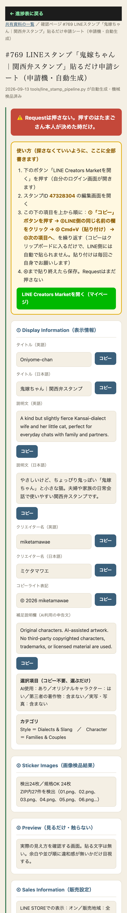

https://creator.line.me/ja/dashboard は存在しないURL（404）だった。#769で https://creator.line.me/ja/（公式トップ。ログイン後ここから「マイページ」ボタンで進める）へ既に修正済みだったが、今回さらに生成のたびにHTTPステータスで全リンクを実測し、200〜399以外が1本でもあればそのキャラのシートを上書きしない（＝前に渡した生きたURLを壊さない）仕組みを tools/line_stamp_pipeline.py に追加した。creator.line.me自体はブラウザ自動化がToS違反のため、ログイン後の実際の『マイページ』URLをAIが操作して確定させることはできない（次にたまごさんが一度ログインした際に控えていただくのが唯一の合法な確定方法）。それまでは確認できているトップページのURLを使う設計。

| 確認項目 | 結果 |
|---|---|
| ①ペラリーノ・ウソッチのリンク死活 | 実測200・404無し |
| ②ラシコルのリンク死活 | 実測200・404無し |
| ③鬼嫁ちゃんのリンク死活 | 実測200・404無し |
| 旧URL(/dashboard)が404であること | 実測404で確認済み（もう使っていない） |
| 逆テスト：わざと死んだURLで発生させ公開ブロックするか | ブロックした・既存ファイルは1バイトも変更されず維持 |
| ログイン後の実『マイページ』URL確定 | creator.line.meは自動操作ToS違反のためAI側では未確定。たまごさんが1回ログインした時に控えていただくのが唯一の方法 |